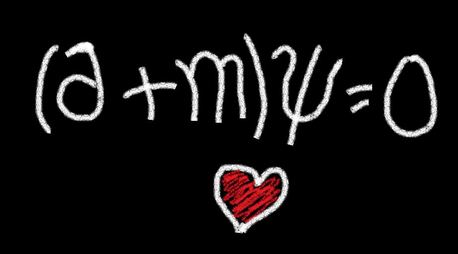

A través del espacio, nuestros lazos se extienden,
Como partículas en un baile que no comprenden.
En ese campo cuántico, nuestro amor se proyecta,
Un misterio profundo que en palabras no se sujeta.
Las distancias se desvanecen ante lo que compartimos,
Como electrones en órbita, juntos nos dirigimos.
Nuestro amor, como un estado entrelazado,
Persiste y florece, nunca ha sido desgarrado.
En el lienzo de la vida, nuestros destinos se cruzan,
Como partículas que nunca se deslizan o rechazan.
La física y el amor, en un juego simbiótico,
Nos unen, nos sostienen, en este vínculo quántico.

Gracias por este mes de felicidad :3
Te quiero mucho <3